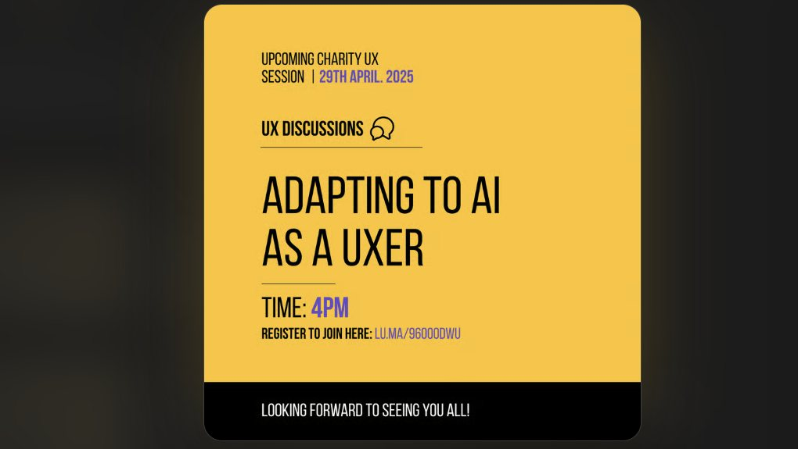
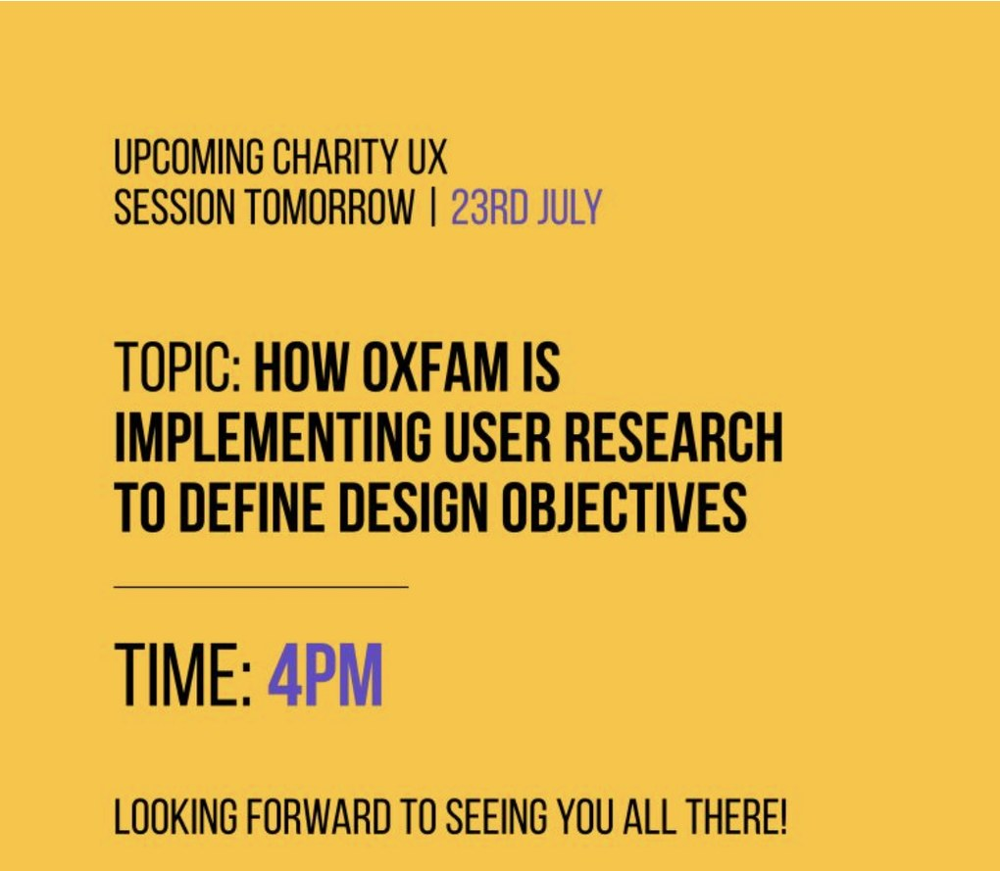
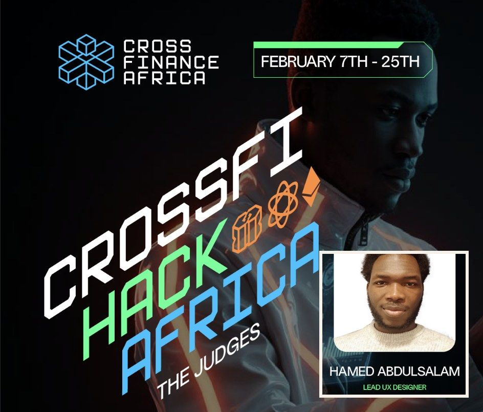
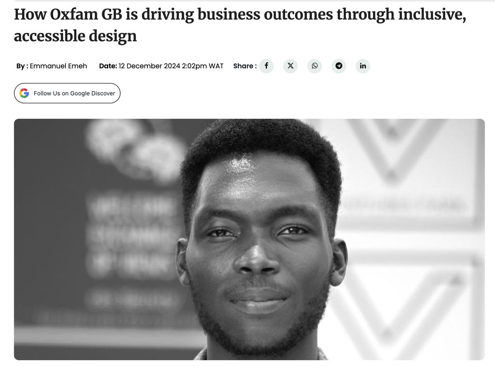
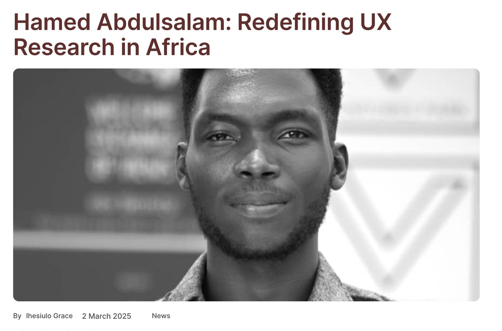
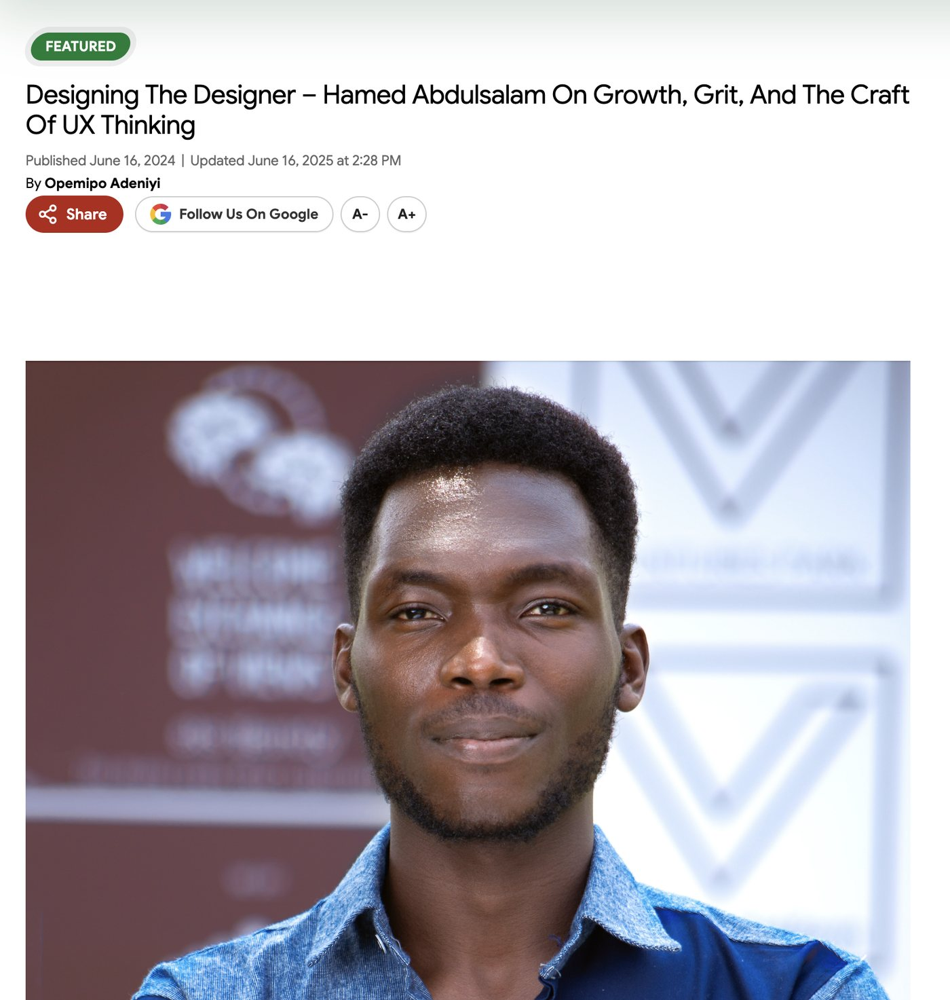

Leadership
Impact that scales past my own output.
Design leadership isn't only what ships under my name. It's what other designers can now do because of the time I've put in.
Leadership highlights
Community Lead, Charity UX Network
I lead a 300+ member community of UX and product professionals across the charity, public and health sectors, giving people who often work without a design team of their own a place to learn from each other.
That means curating thought-leadership sessions with senior UX leaders on the problems non-profit design actually runs into, and translating sector-wide thinking on accessibility and inclusive design into practices individual contributors can use immediately, not just theory.
Mentorship at Mentorled
Mentored 200+ junior and self-taught designers through their transition into industry roles, replacing generic career advice with research-informed guidance grounded in how hiring and design teams actually evaluate work.
The mentoring relationship ran both ways: the questions and friction I heard most often directly shaped how I designed Mentorled's own onboarding platform.
Speaking & writing
Talks, judging, and workshops
I'm available for talks and workshops on accessibility and evidence-based design; get in touch via email.

Adapting to AI as a UXer
Speaker at a Charity UX Network session on how AI is reshaping UX research and design practice.
See full speaking history
How Oxfam Is Implementing User Research to Define Design Objectives
Speaker at a Charity UX Network session, drawing on my own work at Oxfam GB to show how user research shaped real design objectives.

Judge, CrossFi Hack Africa
Evaluated product submissions as a UX judge for Cross Finance Africa's continent-wide Web3 hackathon.
View hackathonPress & recognition

How Oxfam GB Is Driving Business Outcomes Through Inclusive, Accessible Design
Read article
Hamed Abdulsalam: Redefining UX Research in Africa
Read article